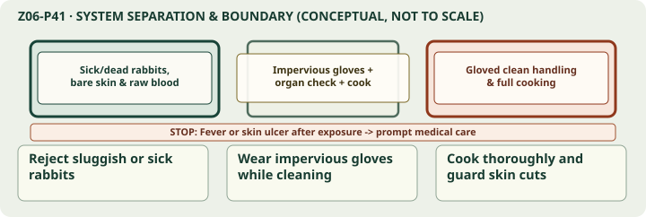

Z06-P41 · Hunting and fishing · New manuscript
Tularemia Precautions with Wild Rabbits, Hares and Rodents
Prevent potentially severe tularemia infection from skin contact, ticks, or aerosols when handling wild rabbits, hares, or rodents.
When it applies · Small-game field handling, outdoor camps, and tick-habitat fieldwork.
Equipment · Impervious gloves, insect repellent, calibrated meat thermometer.

Actions
- Observe wild rabbits and hares before lawful harvest and immediately reject any animal acting sluggish, tamer than normal, or visibly ill; never touch found-dead rabbits or rodents.[H11]
- Wear impervious rubber or nitrile gloves throughout skinning and cleaning, inspect livers for pinpoint white spots (discard entire carcass if present), and wash hands and knives thoroughly.[H11]
- Cook legally harvested healthy rabbit meat thoroughly to safe internal temperatures verified by thermometer, and prevent tick bites in small-game habitat.[H11, F02]
Failure recognition · Skinning a wild rabbit barehanded with a small hangnail or handling a found-dead rodent allows rapid bacterial entry causing ulceroglandular or pneumonic tularemia.[H11]
Verify · Only alert healthy rabbits are handled with intact gloves, abnormal organs trigger immediate disposal, and meat is cooked thoroughly.[H11]
Stop or change course · Stop and seek prompt medical evaluation—telling the clinician about wild-rabbit or tick exposure—if sudden fever, chills, swollen glands, or a skin ulcer develop.[H11]
Evidence and editorial notes
- F02 · USDA / FDA / CDC · Four Steps to Food Safety (current web edition)
- Section: Cook > Minimum internal temperature · Conditions: Food preparation with a working food thermometer
Support: Use food-specific safe internal temperatures; visual appearance alone cannot verify cooking.
Limitations: Thermometer calibration and probe placement affect readings. · Conflicting evidence: None; retained for food safety pack completeness.
Editorial note: Maintains five-pack integrity. · Specialist reviewer: Food safety and public health
Primary source · checked 2026-11-24 - H11 · CDC · About Tularemia and Wild Rabbit / Game Handling Precautions (2024)
- Section: Tularemia precautions with wild rabbits, hares, and rodents · Conditions: Field handling of small game and carcasses
Support: Wear impervious gloves when handling wild rabbits/rodents, avoid sick or sluggish animals, and cook meat thoroughly; bacteria can enter through skin breaks or aerosols.
Limitations: Do not handle found-dead wildlife; seek medical evaluation promptly for fever or skin ulcers after exposure. · Conflicting evidence: None noted.
Editorial note: Critical Z06 small-game zoonosis safety gate. · Specialist reviewer: Infectious-disease specialist
Primary source · checked 2026-11-25
Source lineage · New manuscript (Z06 P17 zoonotic hygiene) · Classification · New manuscript.